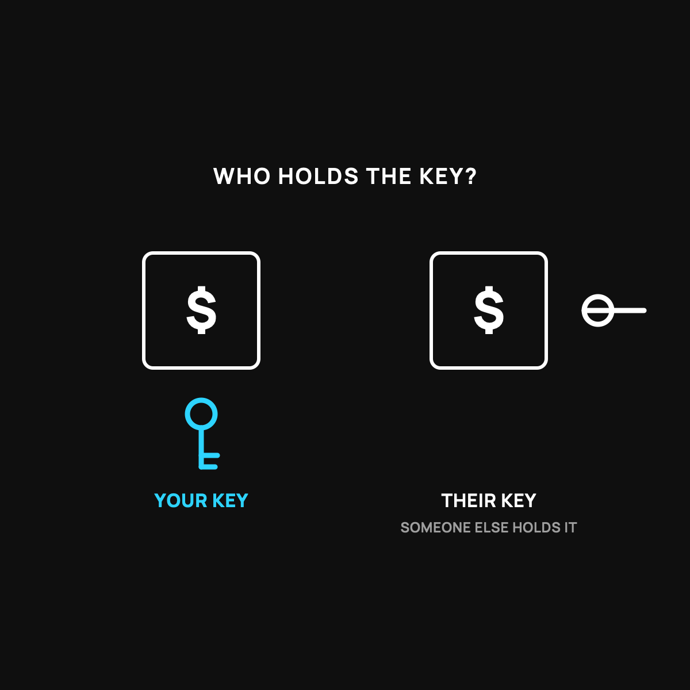

Not Your Keys, Not Your Coins: What That Warning Actually Means
If someone's holding it for you, you have a promise, not the cash.
"Not your keys, not your coins" means that if an app or company holds your bitcoin for you, you have a promise, not the cash. Whoever holds the secret key controls the coins. For a small starter amount, a reputable app is fine. As the amount grows into money you'd hate to lose, learn to hold the key yourself.

If you spend any time around bitcoin, you'll hear a strange little phrase: "not your keys, not your coins." It sounds like a riddle. It's actually one of the most important safety ideas in the whole space, and it's simple once somebody explains it plainly. Here's what it means and why it matters.
Cash in your wallet vs. cash your buddy is holding
Picture two ways to have a hundred dollars.
One: it's folded in your own wallet, in your own pocket. It's yours. You can spend it any second, and nobody can stop you or lose it for you.
Two: your buddy is "holding it for you." He says it's yours, and you trust him. But you can't spend it until he hands it over. If he loses it, spends it, or skips town, your hundred dollars goes with him. You had a promise, not the cash.
That's the whole idea. "Your keys" is the cash in your own pocket. Not having the keys is trusting a buddy to hold it.
What a "key" actually is
With bitcoin, the "key" is a secret code that proves the coins are yours and lets you move them. Whoever holds that key controls the coins. It's like the only key to a lockbox. If you hold it, you're in control. If someone else holds it, they are, no matter whose name is on the account.
When you buy bitcoin on an app and just leave it there, you usually don't hold the key. The company does. They're your buddy holding your cash. Most of the time that's fine. But you're trusting them, and history has some painful examples of companies that lost people's coins or wouldn't give them back.
So should you always hold your own keys?
Not necessarily, and here's the honest part. Holding your own keys means total control, but it also means total responsibility. If you lose your key, there's no help desk, no "forgot password," no way to get the coins back. That freedom cuts both ways.
For a small amount you're just getting started with, leaving it on a reputable app is usually reasonable and simpler. If you've got the very first steps to do, I walked through them here. As the amount grows into money you'd really hate to lose, that's when learning to hold your own keys starts to be worth the responsibility. It helps to understand what a wallet actually is first, which I broke down here.
The takeaway
"Not your keys, not your coins" just means this: if someone else is holding it for you, you have a promise, not the cash. Holding your own key is money in your own pocket, with full control and full responsibility. Small amount, an app is fine. Bigger amount, it's worth learning to hold the key yourself. Either way, now you know what the riddle means.
Questions I get about this
What is a bitcoin key?
A secret code that proves the coins are yours and lets you move them. It's like the only key to a lockbox. Whoever holds it is in control, no matter whose name is on the account. I explain the whole mailbox-and-key picture in What a Bitcoin Wallet Actually Is.
Is it safe to leave bitcoin on an exchange or app?
For a small amount you're learning with, usually reasonable and simpler. But you're trusting the company, and history has painful examples of companies that lost people's coins or wouldn't give them back. The bigger the amount, the more that trust costs.
What happens if I lose my own key?
There's no help desk, no "forgot password," no way to get the coins back. Holding your own keys means total control and total responsibility. That's why it's worth learning carefully before you move real money.
New here?
Normaltown USA is plain-English money and healthcare help for normal people, written by a regular guy with a family of four. No jargon, no hype. Start here, or read the FAQ.